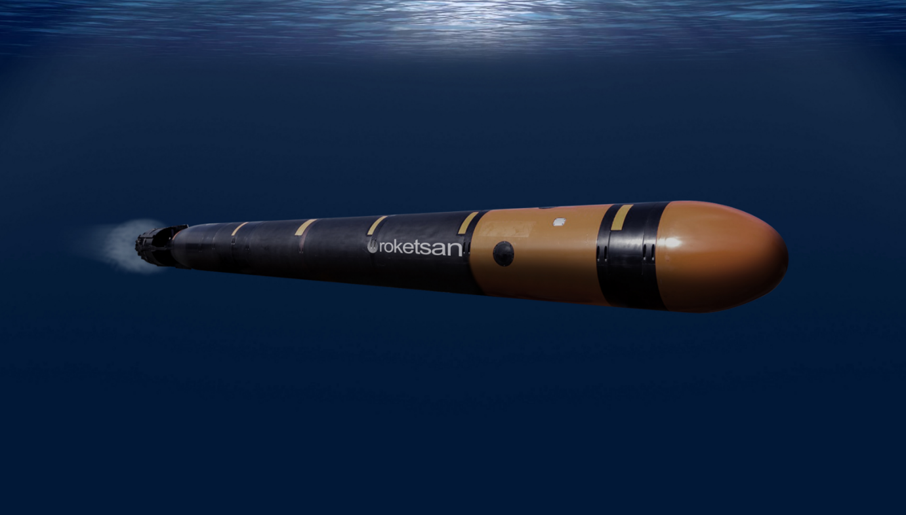
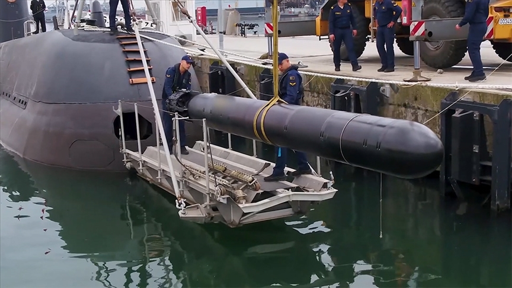
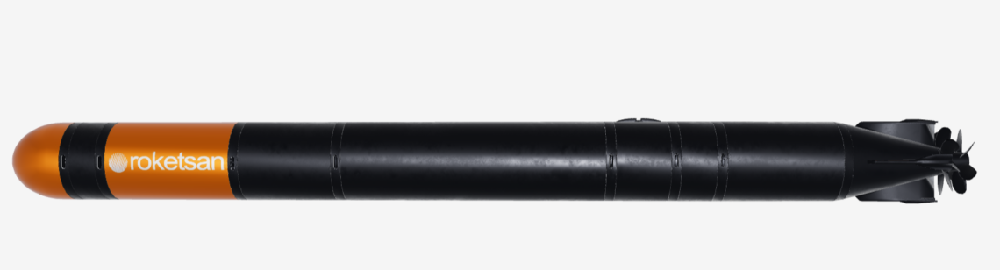

Yeni Nesil Ağır Sınıf Torpido
AKYA, çeşitli tipte denizaltı ve suüstü hedeflerine karşı kullanılmak üzere geliştirilen yeni nesil ağır sınıf torpidodur. Türk Deniz Kuvvetleri için tamamen yerli tasarım yaklaşımıyla geliştirilmiş olup modern sualtı harbi ihtiyaçlarına cevap vermek amacıyla tasarlanmıştır.
Sistem; uzun menzil, yüksek hız, aktif/pasif sonar başlık, akustik karşı-karşı tedbir kabiliyeti ve fiber optik kablo üzerinden güdüm desteği sayesinde klasik torpidolara göre daha esnek, daha dirençli ve daha hassas bir çözüm sunar.
AKYA, özellikle suüstü hedeflerine karşı wake guidance kullanabilmesi ve hem tam otonom hem de fiber optik tel/fiber optik kablo üzerinden yönlendirilebilmesi sayesinde modern torpido konseptinin bütün temel unsurlarını taşıyan stratejik bir deniz silahıdır.
50+ km
45+ knot
Aktif / Pasif Sonar
Denizaltı / Suüstü
Swim-Out
Elektrikli
| Sistem Tipi | Yeni nesil ağır sınıf torpido |
| Adı | AKYA |
| Görev Alanı | Denizaltı ve suüstü hedeflerine karşı sualtı harp görevi |
| Menzil | 50+ km |
| Hız | 45+ knot |
| Hedef Türleri | Denizaltılar ve suüstü hedefleri |
| Güdüm Başlığı | Aktif / pasif sonar başlık |
| Akustik Koruma | Acoustic counter-countermeasure capability |
| Suüstü Hedef Güdümü | Wake guidance |
| Güdüm Modu | Self guidance / otonom güdüm |
| Onboard Guidance | Fiber optik kablo üzerinden yönlendirme |
| Tapa | Yaklaşma / çarpma |
| Harp Başlığı | Duyarsız harp başlığı, sualtı şok etkili |
| Atım Tipi | Swim-out |
| Tahrik Sistemi | Brushless DC elektrik motoru + kontra döner pervane sistemi |
| Batarya | Yüksek enerjili kimyasal batarya |
| Kullanım Şekli | Tam otonom veya fiber optik tel/kablo güdümlü kullanım |
| Öne Çıkan Özellik | Uzun menzil, yüksek hız, sonar güdüm ve wake guidance bir arada sunan yerli ağır torpido |
| Uzun Menzilli Sualtı Taarruzu | 50 km üzeri menzilde sualtı harp kabiliyeti |
| Yüksek Hız | 45 knot üzeri sürat ile hedefe hızlı yaklaşım |
| Otonom Görev | Self guidance ile bağımsız görev icrası |
| Operatör Destekli Güdüm | Fiber optik kablo üzerinden yönlendirme imkânı |
| Karşı Tedbir Dayanımı | Akustik karşı tedbirlere karşı dayanıklı arayıcı yaklaşımı |
| Suüstü Hedef Angajmanı | Wake guidance ile suüstü hedeflere angajman |
| Çoklu Görev Ortamı | Farklı sualtı ve suüstü hedeflerine karşı görev yapabilme |
| Sualtı Tahrip Etkisi | Sualtı şok etkisi odaklı harp başlığı yaklaşımı |
| Denizaltılar | Çeşitli tipte düşman denizaltıları |
| Suüstü Gemileri | Farklı tipte suüstü hedefleri |
| Yüksek Öncelikli Deniz Hedefleri | Operasyon sahasında kritik öneme sahip deniz unsurları |
| Sualtı Harp Hedefleri | Modern denizaltı harp ortamındaki akustik hedefler |
| Fırlatma Platformu | Denizaltı platformları |
| Atım Yöntemi | Swim-out fırlatma yaklaşımı |
| Kontrol Felsefesi | Otonomi ile operatör yönlendirmesini birleştiren hibrit kullanım |
| Torpido Ailesindeki Yeri | Türk Deniz Kuvvetleri için geliştirilen yeni nesil ağır sınıf torpido çözümü |
| Görev Profili | Anti-submarine ve anti-surface warfare görevleri |


